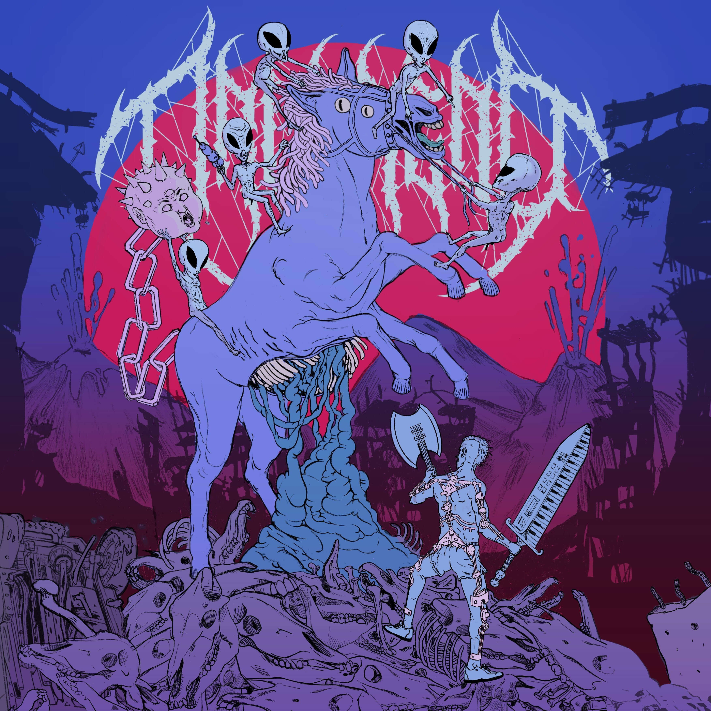
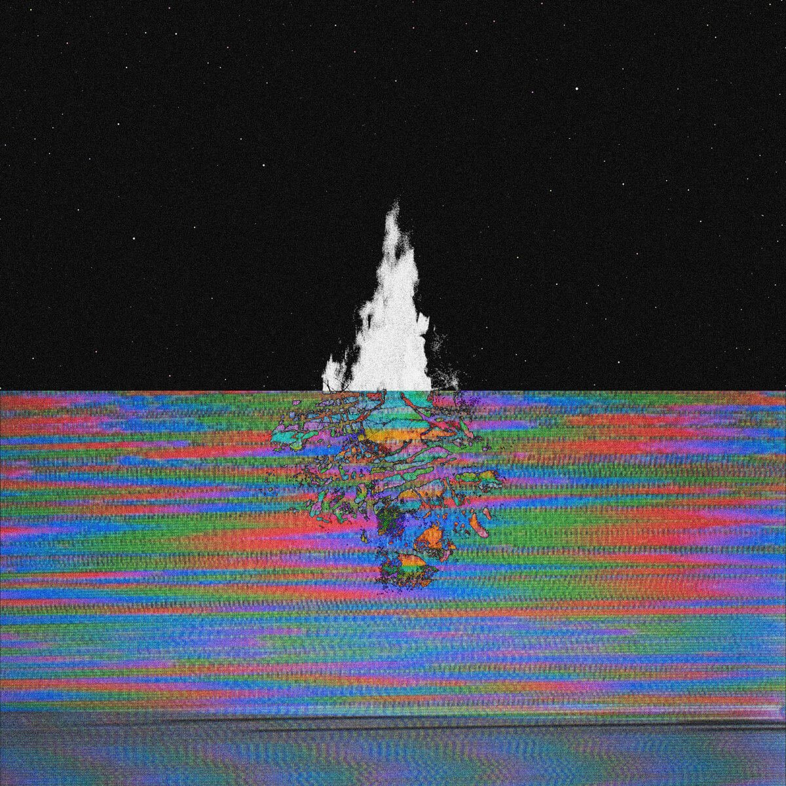
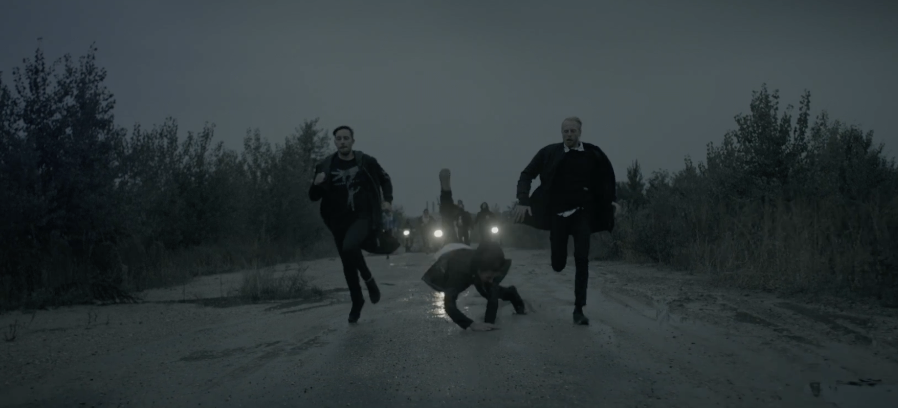
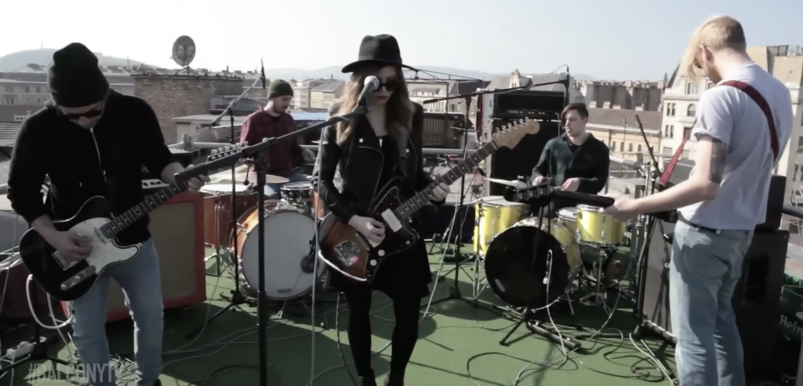

Audio

| Artist: | Dronaldo |
| Album: | Ambient Music for Gym People |
| Instrument: | ¯\_(ツ)_/¯ |
| Genre: | Electro / Ghettotech |
| Record label: | Self released |
| Release: | unreleased |

| Artist: | Oaken |
| Album: | From the Bonfire |
| Instrument: | Guitars // Synth |
| Genre: | Post-Metal / Experimental |
| Record label: | Fractions of Life Records |
| Release: | September 29, 2025 |

| Artist: | Boru |
| Album: | Self-Dealer |
| Instrument: | Drums |
| Genre: | Sludge // Doom |
| Record label: | Self released |
| Release: | September 11, 2024 |

| Artist: | Kytaro |
| Music video | Non-Binary |
| Instrument: | Drums |
| Genre: | Pseudo-exotic Psych-math |
| Production by: | Luca Broglia & Valerio Figuccio |
| Release: | April 22, 2021 |

| Artist: | Kytaro |
| Album: | Temporary Internet Files |
| Instrument: | Drums |
| Genre: | Pseudo-exotic Psych-math |
| Record label: | Self released |
| Release: | April 18, 2022 |

| Artist: | Kytaro |
| Music video | Browser History |
| Instrument: | Drums |
| Genre: | Pseudo-exotic Psych-math |
| Production by: | Cineast |
| Release: | August 30, 2021 |

| Artist: | Oaken |
| Music video | Barbarian |
| Instrument: | Guitar |
| Genre: | Post-Metal / Experimental |
| Production by: | Kispál László |
| Release: | June 28, 2021 |

| Artist: | Oaken |
| Album: | Untitled |
| Instrument: | Guitars |
| Genre: | Post-Metal // Experimental |
| Record label: | Self released |
| Release: | June 28, 2021 |

| Artist: | Kytaro |
| Album: | White Noise for Kids |
| Instrument: | Drums |
| Genre: | Pseudo-exotic Psych-math |
| Record label: | Self released |
| Release: | July 7, 2019 |

| Artist: | Kytaro |
| Music video | Bad Settings |
| Instrument: | Drums |
| Genre: | Pseudo-exotic Psych-math |
| Production by: | Destroy The Humanity |
| Release: | January 29, 2020 |

| Artist: | Wasted Struggle |
| Album: | Agenda of Fear |
| Instrument: | Guitars |
| Genre: | Metal |
| Record label: | Self released |
| Release: | January 17, 2020 |

| Artist: | Oaken |
| Music video | Thrust |
| Instrument: | Guitar |
| Genre: | Post-Metal / Experimental |
| Production by: | Self released |
| Release: | April 14, 2019 |

| Artist: | Kytaro |
| Music video | Kryptogyros |
| Instrument: | Drums |
| Genre: | Pseudo-exotic Psych-math |
| Production by: | Cinesuper |
| Release: | February 20, 2019 |

| Artist: | SONYA |
| Music video | Krypta |
| Instrument: | Drums |
| Genre: | Shoegaze // Post-rock |
| Production by: | DDK Production // Adamsky |
| Release: | January 20, 2016 |

| Artist: | SONYA |
| Music video | Piece of mine |
| Instrument: | Drums |
| Genre: | Shoegaze // Post-rock |
| Production by: | Balcony TV |
| Release: | March 13, 2014 |